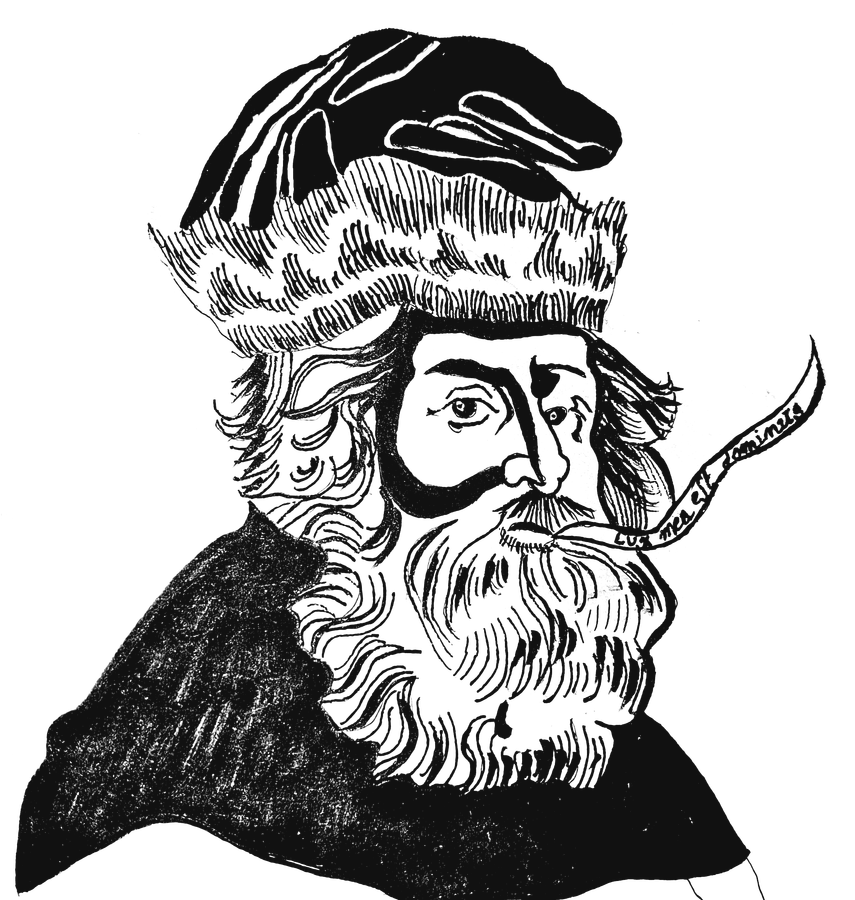

Cabinet of AI · Exhibit 01
The Lagado Engine
Write any book. No genius. No study.
Just turn the cranks.

Cabinet of AI · Exhibit 01
The Lagado Engine
Write any book. No genius. No study.
Just turn the cranks.

Cabinet of AI · Exhibit 02
Llull’s Ars Magna
Ask anything.
Get the one true answer.
A cabinet of curiosities
Cabinet of AI
The ideas behind AI are centuries old.
Play with them.